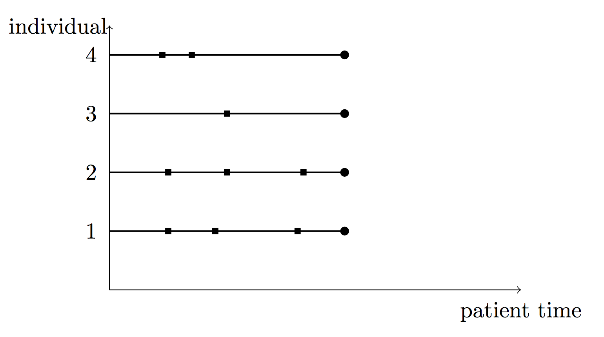

simrec: An R-Package for Simulation of Recurrent Event Data
Katharina Ingel1
Institute of Medical Biostatistics, Epidemiology and Informatics (IMBEI, Mainz)Stella Preussler2
Institute of Medical Biostatistics, Epidemiology and Informatics (IMBEI, Mainz)Federico Marini3
Institute of Medical Biostatistics, Epidemiology and Informatics (IMBEI, Mainz)Antje Jahn-Eimermacher4
Institute of Medical Biostatistics, Epidemiology and Informatics (IMBEI, Mainz)2020-11-16
Source:vignettes/simrec-vignette.Rmd
simrec-vignette.RmdAbstract
simrec allows simulation of recurrent event data following the multiplicative intensity model described in (Andersen and Gill 1982) with the baseline hazard being a function of the total/calendar time. To induce between-subject-heterogeneity a random effect covariate (frailty term) can be incorporated. Furthermore, via simreccomp simulation of data following a multistate model with recurrent event data of one type and a competing event is possible. simrecint gives the possibility to additionally simulate a recruitment time for each individual and cut the data to an interim data set. With simrecPlot and simreccompPlot the data can be plotted.
Keywords: recurrent event data, competing event, frailty, simulation, total-time model
Introduction
The simrec package includes the functions simrec, simreccomp and simrecint and allows simulation of recurrent event data. To induce between-subject-heterogeneity a random effect covariate (frailty term) can be incorporated. Via simreccomp time-to-event data that follow a multistate model with recurrent event data of one type and a competing event can be simulated. Data output is in the counting-process format. simrecint gives the possibility to additionally simulate a recruitment time for each individual and cut the data to an interim data set. With simrecPlot and simreccompPlot the data can be plotted.
The simrec function
Description
The function simrec allows simulation of recurrent event data following the multiplicative intensity model described in Andersen and Gill (Andersen and Gill 1982) with the baseline hazard being a function of the total/calendar time. To induce between-subject-heterogeneity a random effect covariate (frailty term) can be incorporated. Data for individual \(i\) are generated according to the intensity process \[Y_i(t)\cdot \lambda_0(t)\cdot Z_i \cdot \exp(\beta^t X_i)\] where \(X_i\) defines the covariate vector, and \(\beta\) the regression coefficient vector. \(\lambda_0(t)\) denotes the baseline hazard, being a function of the total/calendar time \(t\), and \(Y_i(t)\) the predictable process that equals one as long as individual \(i\) is under observation and at risk for experiencing events. \(Z_i\) denotes the frailty variable with \((Z_i)_i\) iid with \(E(Z_i)=1\) and \(Var(Z_i)=\theta\). The parameter \(\theta\) describes the degree of between-subject-heterogeneity. Data output is in the counting process format.
simrec(N, fu.min, fu.max, cens.prob = 0, dist.x = "binomial", par.x = 0,
beta.x = 0, dist.z = "gamma", par.z = 0, dist.rec, par.rec, pfree = 0,
dfree = 0)Parameters
NNumber of individualsfu.minMinimum length of follow-up.fu.maxMaximum length of follow-up. Individuals length of follow-up is generated from a uniform distribution on[fu.min, fu.max]. Iffu.min=fu.max, then all individuals have a common follow-up.cens.probGives the probability of being censored due to loss to follow-up beforefu.max. For a random set of individuals defined by a B(N,cens.prob)-distribution, the time to censoring is generated from a uniform distribution on[0, fu.max]. Default iscens.prob=0, i.e. no censoring due to loss to follow-up.dist.xDistribution of the covariate(s) \(X\). If there is more than one covariate,dist.xmust be a vector of distributions with one entry for each covariate. Possible values are"binomial"and"normal", default is"binomial".par.xParameters of the covariate distribution(s). For"binomial",par.xis the probability for \(x=1\). For"normal",par.xis the vector of (\(\mu, \sigma\))} where \(\mu\) is the mean and \(\sigma\) is the standard deviation of a normal distribution. If one of the covariates is defined to be normally distributed,par.xmust be a list, e.g.dist.x <- c("binomial", "normal")andpar.x <- list(0.5, c(1,2)). Default ispar.x = 0, i.e. \(x=0\) for all individuals.beta.xRegression coefficient(s) for the covariate(s) \(x\). If there is more than one covariate,beta.xmust be a vector of coefficients with one entry for each covariate.simrecgenerates as many covariates as there are entries inbeta.x. Default isbeta.x = 0, corresponding to no effect of the covariate \(x\).dist.zDistribution of the frailty variable \(Z\) with \(E(Z)=1\) and \(Var(Z)=\theta\). Possible values are"gamma"for a Gamma distributed frailty and"lognormal"for a lognormal distributed frailty. Default isdist.z="gamma".par.zParameter \(\theta\) for the frailty distribution: this parameter gives the variance of the frailty variable \(Z\). Default ispar.z=0, which causes \(Z\equiv 1\), i.e. no frailty effect.dist.recForm of the baseline hazard function. Possible values are"weibull"or"gompertz"or"lognormal"or"step".par.recParameters for the distribution of the event data.
Ifdist.rec="weibull"the hazard function is \[\lambda_0(t)=\lambda\cdot\nu\cdot t^{\nu - 1}\] where \(\lambda>0\) is the scale and \(\nu>0\) is the shape parameter. Thenpar.rec=c(lambda, nu). A special case of this is the exponential distribution for \(\nu=1\).\ Ifdist.rec="gompertz", the hazard function is \[\lambda_0(t)=\lambda\cdot \exp(\alpha t)\] where \(\lambda>0\) is the scale and \(\alpha\in(-\infty,+\infty)\) is the shape parameter. Thenpar.rec=c(lambda, alpha).
Ifdist.rec="lognormal", the hazard function is \[\lambda_0(t) = \frac{1}{\sigma t} \cdot \frac{\phi(\frac{ln(t)-\mu}{\sigma})}{\Phi(\frac{-ln(t)-\mu}{\sigma})}\] where \(\phi\) is the probability density function and \(\Phi\) is the cumulative distribution function of the standard normal distribution, \(\mu\in(-\infty,+\infty)\) is a location parameter and \(\sigma>0\) is a shape parameter. Thenpar.rec=c(mu,sigma). Please note that specifyingdist.rec="lognormal"together with some covariates does not specify the usual lognormal model (with covariates specified as effects on the parameters of the lognormal distribution resulting in non-proportional hazards), but only defines the baseline hazard and incorporates covariate effects using the proportional hazard assumption.
Ifdist.rec="step"the hazard function is \[\lambda_0(t)=\begin{cases} a, & t\leq t_1\cr b, & t>t_1\end{cases}\] Thenpar.rec=c(a,b,t_1), with \(a,b\geq 0\).pfreeProbability that after experiencing an event the individual is not at risk for experiencing further events for a length ofdfreetime units. Default ispfree = 0.dfreeLength of the risk-free interval. Must be in the same time unit asfu.max. Default isdfree = 0, i.e. the individual is continously at risk for experiencing events until end of follow-up.
Output
The output is a data.frame consisting of the columns:
-
idAn integer number for identification of each individual -
xorx.V1, x.V2, ...- depending on the covariate matrix. Contains the randomly generated value of the covariate(s) \(X\) for each individual. -
zContains the randomly generated value of the frailty variable \(Z\) for each individual. -
startThe start of interval[start, stop], when the individual starts to be at risk for a next event. -
stopThe time of an event or censoring, i.e. the end of interval[start, stop]. -
statusAn indicator of whether an event occured at timestop(status=1) or the individual is censored at timestop(status=0). -
fuLength of follow-up period[0,fu]for each individual.
For each individual there are as many lines as it experiences events, plus one line if being censored. The data format corresponds to the counting process format.
Details
Data are simulated by extending the methods proposed by Bender (Bender, Augustin, and Blettner 2005) to the multiplicative intensity model. You can read more on this in our work (Jahn-Eimermacher et al. 2015).
Example
library(simrec)
### Example:
### A sample of 10 individuals
N <- 10
### with a binomially distributed covariate with a regression coefficient
### of beta=0.3, and a standard normally distributed covariate with a
### regression coefficient of beta=0.2,
dist.x <- c("binomial", "normal")
par.x <- list(0.5, c(0, 1))
beta.x <- c(0.3, 0.2)
### a gamma distributed frailty variable with variance 0.25
dist.z <- "gamma"
par.z <- 0.25
### and a Weibull-shaped baseline hazard with shape parameter lambda=1
### and scale parameter nu=2.
dist.rec <- "weibull"
par.rec <- c(1,2)
### Subjects are to be followed for two years with 20\% of the subjects
### being censored according to a uniformly distributed censoring time
### within [0,2] (in years).
fu.min <- 2
fu.max <- 2
cens.prob <- 0.2
### After each event a subject is not at risk for experiencing further events
### for a period of 30 days with a probability of 50\%.
dfree <- 30/365
pfree <- 0.5
simdata <- simrec(N, fu.min, fu.max, cens.prob, dist.x, par.x, beta.x,
dist.z, par.z, dist.rec, par.rec, pfree, dfree)
print(simdata[1:10,])
DT::datatable(simdata)## id x.V1 x.V2 z start stop status fu
## 1 1 1 -1.1426742 1.2755469 0.0000000 1.8848462 1 2
## 2 1 1 -1.1426742 1.2755469 1.8848462 2.0000000 0 2
## 3 2 1 -0.2090575 0.5390613 0.0000000 0.7235494 1 2
## 4 2 1 -0.2090575 0.5390613 0.7235494 0.9288272 1 2
## 5 2 1 -0.2090575 0.5390613 1.0110190 1.0486044 1 2
## 6 2 1 -0.2090575 0.5390613 1.0486044 1.6916375 1 2
## 7 2 1 -0.2090575 0.5390613 1.6916375 2.0000000 0 2
## 8 3 0 -0.1283264 0.5417807 0.0000000 2.0000000 0 2
## 10 4 0 -1.6572001 0.5779860 0.0000000 1.0349587 1 2
## 11 4 0 -1.6572001 0.5779860 1.0349587 2.0000000 0 2
The simreccomp function
Description
The function simreccomp allows simulation of time-to-event-data that follow a multistate-model with recurrent events of one type and a competing event. The baseline hazard for the cause-specific hazards are here functions of the total/calendar time. To induce between-subject-heterogeneity a random effect covariate (frailty term) can be incorporated for the recurrent and the competing event.
Data for the recurrent events of the individual \(i\) are generated according to the cause-specific hazards \[\lambda_{0r}(t)\cdot Z_{ri} \cdot \exp(\beta_r^t X_i)\] where \(X_i\) defines the covariate vector and \(\beta_r\) the regression coefficient vector. \(\lambda_{0r}(t)\) denotes the baseline hazard, being a function of the total/calendar time \(t\) and \(Z_{ri}\) denotes the frailty variables with \((Z_{ri})_i\) iid with \(E(Z_{ri})=1\) and \(Var(Z_{ri})=\theta_r\). The parameter \(\theta_r\) describes the degree of between-subject-heterogeneity for the recurrent event. Analougously the competing event is generated according to the cause-specific hazard conditionally on the frailty variable and covariates: \[\lambda_{0c}(t)\cdot Z_{ci} \cdot \exp(\beta_c^t X_i)\] Data output is in the counting process format.
simreccomp(N, fu.min, fu.max, cens.prob = 0, dist.x = "binomial", par.x = 0,
beta.xr = 0, beta.xc = 0, dist.zr = "gamma", par.zr = 0, a = NULL,
dist.zc = NULL, par.zc = NULL, dist.rec, par.rec,
dist.comp, par.comp, pfree = 0, dfree = 0)Parameters
NNumber of individualsfu.minMinimum length of follow-up.fu.maxMaximum length of follow-up. Individuals length of follow-up is generated from a uniform distribution on[fu.min, fu.max]. Iffu.min=fu.max, then all individuals have a common follow-up.cens.probGives the probability of being censored due to loss to follow-up beforefu.max. For a random set of individuals defined by a B(N,cens.prob)-distribution, the time to censoring is generated from a uniform distribution on[0, fu.max]. Default iscens.prob=0, i.e. no censoring due to loss to follow-up.dist.xDistribution of the covariate(s) \(X\). If there is more than one covariate,dist.xmust be a vector of distributions with one entry for each covariate. Possible values are"binomial"and"normal", default is"binomial".par.xParameters of the covariate distribution(s). For"binomial",par.xis the probability for \(x=1\). For"normal",par.xis the vector of (\(\mu, \sigma\))} where \(\mu\) is the mean and \(\sigma\) is the standard deviation of a normal distribution. If one of the covariates is defined to be normally distributed,par.xmust be a list, e.g.dist.x <- c("binomial", "normal")andpar.x <- list(0.5, c(1,2)). Default ispar.x = 0, i.e. \(x=0\) for all individuals.beta.xrRegression coefficient(s) for the covariate(s) \(x\) corresponding to the recurrent events. If there is more than one covariate,beta.xrmust be a vector of coefficients with one entry for each covariate.simreccompgenerates as many covariates as there are entries inbeta.xr. Default isbeta.xr = 0, corresponding to no effect of the covariate \(x\) on the recurrent events.beta.xcRegression coefficient(s) for the covariate(s) \(x\) corresponding to the competing event. If there is more than one covariate,beta.xcmust be a vector of coefficients with one entry for each covariate.simreccompgenerates as many covariates as there are entries inbeta.xc. Default isbeta.xc = 0, corresponding to no effect of the covariate \(x\) on the competing event.dist.zrDistribution of the frailty variable \(Z_r\) for the recurrent events with \(E(Z_r)=1\) and \(Var(Z_r)=\theta_r\). Possible values are"gamma"for a Gamma distributed frailty and"lognormal"for a lognormal distributed frailty. Default isdist.zr="gamma".par.zrParameter \(\theta_r\) for the frailty distribution: this parameter gives the variance of the frailty variable \(Z_r\). Default ispar.zr=0, which causes \(Z\equiv 1\), i.e. no frailty effect for the recurrent events.dist.zcDistribution of the frailty variable \(Z_c\) for the competing event with \(E(Z_c)=1\) and \(Var(Z_c)=\theta_r\). Possible values are"gamma"for a Gamma distributed frailty and"lognormal"for a lognormal distributed frailty.par.zcParameter \(\theta_c\) for the frailty distribution: this parameter gives the variance of the frailty variable \(Z_c\).aAlternatively, the frailty distribution for the competing event can be computed through the distribution of the frailty variable \(Z_r\) by \(Z_c=Z_r^a\). Eitheraordist.zcandpar.zcmust be specified.dist.recForm of the baseline hazard function for the recurrent events. Possible values are"weibull"or"gompertz"or"lognormal"or"step".par.recParameters for the distribution of the recurrent event data.
Ifdist.rec="weibull"the hazard function is \[\lambda_0(t)=\lambda\cdot\nu\cdot t^{\nu - 1}\] where \(\lambda>0\) is the scale and \(\nu>0\) is the shape parameter. Thenpar.rec=c(lambda, nu). A special case of this is the exponential distribution for \(\nu=1\).\ Ifdist.rec="gompertz", the hazard function is \[\lambda_0(t)=\lambda\cdot \exp(\alpha t)\] where \(\lambda>0\) is the scale and \(\alpha\in(-\infty,+\infty)\) is the shape parameter. Thenpar.rec=c(lambda, alpha).
Ifdist.rec="lognormal", the hazard function is \[\lambda_0(t) = \frac{1}{\sigma t} \cdot \frac{\phi(\frac{ln(t)-\mu}{\sigma})}{\Phi(\frac{-ln(t)-\mu}{\sigma})}\] where \(\phi\) is the probability density function and \(\Phi\) is the cumulative distribution function of the standard normal distribution, \(\mu\in(-\infty,+\infty)\) is a location parameter and \(\sigma>0\) is a shape parameter. Thenpar.rec=c(mu,sigma). Please note that specifyingdist.rec="lognormal"together with some covariates does not specify the usual lognormal model (with covariates specified as effects on the parameters of the lognormal distribution resulting in non-proportional hazards), but only defines the baseline hazard and incorporates covariate effects using the proportional hazard assumption.
Ifdist.rec="step"the hazard function is \[\lambda_0(t)=\begin{cases} a, & t\leq t_1\cr b, & t>t_1\end{cases}\] Thenpar.rec=c(a,b,t_1), with \(a,b\geq 0\).dist.compForm of the baseline hazard function for the competing event. Possible values are"weibull"or"gompertz"or"lognormal"or"step".par.compParameters for the distribution of the competing event data. For more details seepar.rec.pfreeProbability that after experiencing an event the individual is not at risk for experiencing further events for a length ofdfreetime units. Default ispfree = 0.dfreeLength of the risk-free interval. Must be in the same time unit asfu.max. Default isdfree = 0, i.e. the individual is continously at risk for experiencing events until end of follow-up.
Output
The output is a data.frame consisting of the columns:
-
idAn integer number for identification of each individual -
xorx.V1, x.V2, ...- depending on the covariate matrix. Contains the randomly generated value of the covariate(s) \(X\) for each individual. -
zrContains the randomly generated value of the frailty variable \(Z_r\) for each individual. -
zcContains the randomly generated value of the frailty variable \(Z_c\) for each individual. -
startThe start of interval[start, stop], when the individual starts to be at risk for a next event. -
stopThe time of an event or censoring, i.e. the end of interval[start, stop]. -
statusAn indicator of whether an event occured at timestop(status=1) or the individual is censored at timestop(status=0) or the competing event occured at timestop(status=2). -
fuLength of follow-up period[0,fu]for each individual.
For each individual there are as many lines as it experiences events, plus one line if being censored. The data format corresponds to the counting process format.
Example
library(simrec)
### Example:
### A sample of 10 individuals
N <- 10
### with a binomially distributed covariate and a standard normally distributed
### covariate with regression coefficients of beta.xr=0.3 and beta.xr=0.2,
### respectively, for the recurrent events,
### as well as regression coefficients of beta.xc=0.5 and beta.xc=0.25,
### respectively, for the competing event.
dist.x <- c("binomial", "normal")
par.x <- list(0.5, c(0, 1))
beta.xr <- c(0.3, 0.2)
beta.xc <- c(0.5, 0.25)
### a gamma distributed frailty variable for the recurrent event with
### variance 0.25 and for the competing event with variance 0.3,
dist.zr <- "gamma"
par.zr <- 0.25
dist.zc <- "gamma"
par.zc <- 0.3
### alternatively the frailty variable for the competing event can be computed
### via a:
a <- 0.5
### Furthermore a Weibull-shaped baseline hazard for the recurrent event with
### shape parameter lambda=1 and scale parameter nu=2,
dist.rec <- "weibull"
par.rec <- c(1, 2)
### and a Weibull-shaped baseline hazard for the competing event with
### shape parameter lambda=1 and scale parameter nu=2
dist.comp <- "weibull"
par.comp <- c(1, 2)
### Subjects are to be followed for two years with 20% of the subjects
### being censored according to a uniformly distributed censoring time
### within [0,2] (in years).
fu.min <- 2
fu.max <- 2
cens.prob <- 0.2
### After each event a subject is not at risk for experiencing further events
### for a period of 30 days with a probability of 50%.
dfree <- 30/365
pfree <- 0.5
simdata1 <- simreccomp(N = N, fu.min = fu.min, fu.max = fu.max, cens.prob = cens.prob,
dist.x = dist.x, par.x = par.x, beta.xr = beta.xr,
beta.xc = beta.xc, dist.zr = dist.zr, par.zr = par.zr, a = a,
dist.rec = dist.rec, par.rec = par.rec, dist.comp = dist.comp,
par.comp = par.comp, pfree = pfree, dfree = dfree)
simdata2 <- simreccomp(N = N, fu.min = fu.min, fu.max = fu.max, cens.prob = cens.prob,
dist.x = dist.x, par.x = par.x, beta.xr = beta.xr,
beta.xc = beta.xc, dist.zr = dist.zr, par.zr = par.zr,
dist.zc = dist.zc, par.zc = par.zc, dist.rec = dist.rec,
par.rec = par.rec, dist.comp = dist.comp,
par.comp = par.comp, pfree = pfree, dfree = dfree)
print(simdata1[1:10, ])
print(simdata2[1:10, ])
DT::datatable(simdata1)
DT::datatable(simdata2)## id x.V1 x.V2 zr zc start stop status fu
## 1 1 1 1.085576090 1.8452185 1.3583882 0.0000000 0.6094224 1 0.8380247
## 2 1 1 1.085576090 1.8452185 1.3583882 0.6094224 0.8220506 1 0.8380247
## 3 1 1 1.085576090 1.8452185 1.3583882 0.8220506 0.8380247 2 0.8380247
## 14 2 0 1.217092822 0.7054263 0.8398966 0.0000000 0.6897968 0 0.6897968
## 16 3 0 1.804362339 0.7895395 0.8885604 0.0000000 0.4371780 1 0.7203518
## 17 3 0 1.804362339 0.7895395 0.8885604 0.4371780 0.4695481 1 0.7203518
## 18 3 0 1.804362339 0.7895395 0.8885604 0.4695481 0.7203518 2 0.7203518
## 23 4 0 0.501996424 1.8124563 1.3462750 0.0000000 0.3476992 2 0.3476992
## 28 5 0 -0.006930962 1.5609834 1.2493932 0.0000000 0.3534271 0 0.3534271
## 30 6 1 0.172678426 1.0217030 1.0107932 0.0000000 0.3420855 2 0.3420855
## id x.V1 x.V2 zr zc start stop status fu
## 1 1 0 1.5238787 0.7626369 1.1248767 0.0000000 0.4788224 2 0.4788224
## 6 2 0 0.8298476 2.7045862 0.7951843 0.0000000 0.4643580 1 0.7670761
## 7 2 0 0.8298476 2.7045862 0.7951843 0.4643580 0.6590206 1 0.7670761
## 8 2 0 0.8298476 2.7045862 0.7951843 0.7412124 0.7670761 2 0.7670761
## 13 3 1 -0.1765200 0.9413268 1.8581519 0.0000000 0.3578173 2 0.3578173
## 20 4 0 1.6143641 2.4600369 1.1855227 0.0000000 0.4218302 1 0.9898355
## 21 4 0 1.6143641 2.4600369 1.1855227 0.4218302 0.4493574 1 0.9898355
## 22 4 0 1.6143641 2.4600369 1.1855227 0.4493574 0.6988152 1 0.9898355
## 23 4 0 1.6143641 2.4600369 1.1855227 0.7810070 0.8073613 1 0.9898355
## 24 4 0 1.6143641 2.4600369 1.1855227 0.8073613 0.9432439 1 0.9898355
The simrecint function
Description
With this function previously simulated data (for example simulated by the use of simrec or simreccomp) can be cut to an interim data set. The simulated data must be in patient time (i.e. time since the patient entered the study, for an example see below), and must be in the counting process format. Furthermore, the dataset must have the variables id, start,stop, and status, like data simulated by the use of simrec or simreccomp. Then for every individual additionally a recruitment time is generated in study time (i.e. time since start of the study, for an example see below), which is uniformly distributed on \([0, t_R]\). The timing of the interim analysis \(t_I\) is set in study time and data are being cut to all data, that are available at the interim analysis. If you only wish to simulate a recruitment time, \(t_I\) can be set to \(t_R + fu.max\) or something else beyond the end of the study.
Simulated data in patient time:

Simulated data in study time with time of interim analysis (\(t_I\)), end of recruitment period (\(t_R\)) and end of study

simrecint(data, N, tR, tI)Parameters
-
dataPreviously generated data (in patient time), that shall be cut to interim data -
NNumber of individuals, for whichdatawas generated -
tRLength of the recruitment period (in study time) -
tITiming of the interim analysis (in study time)
Output
The output is a data.frame consisting of the columns, that were put into, and additionally the following columns:
-
rectimeThe recruitment time for each individual (in study time). -
interimtimeThe time of the interim analysistI(in study time). -
stop_studyThe stopping time for each event in study time.
Individuals that are not already recruited at the interim analysis are left out here.
Example
### Example - see example for simrec
library(simrec)
N <- 10
dist.x <- c("binomial", "normal")
par.x <- list(0.5, c(0,1))
beta.x <- c(0.3, 0.2)
dist.z <- "gamma"
par.z <- 0.25
dist.rec <- "weibull"
par.rec <- c(1,2)
fu.min <- 2
fu.max <- 2
cens.prob <- 0.2
simdata <- simrec(N, fu.min, fu.max, cens.prob, dist.x, par.x, beta.x, dist.z,
par.z, dist.rec, par.rec)
### Now simulate for each patient a recruitment time in [0,tR=2]
### and cut data to the time of the interim analysis at tI=1:
simdataint <- simrecint(simdata, N = N, tR = 2, tI = 1)
print(simdataint) # only run for small N!
DT::datatable(simdataint)## id x.V1 x.V2 z start stop status fu rectime interimtime
## 1 1 1 0.7416025 0.6277867 0 0.3916716 0 0.5121684 0.6083284 1
## 10 4 0 -0.1898505 1.4962597 0 0.4829684 0 0.4829684 0.3564376 1
## 18 7 0 -1.5238564 0.8523435 0 0.5151156 0 2.0000000 0.4848844 1
## 30 10 0 2.0652235 1.3796612 0 0.4205328 0 0.9576678 0.5794672 1
## stop_study
## 1 1.120497
## 10 0.839406
## 18 1.220752
## 30 1.189265Plotting the Data
Description
The functions simrecPlot and simreccompPlot allow plotting of recurrent event data, possibly with a competing event.
simrecPlot(simdata, id = "id", start = "start", stop = "stop", status = "status")
simreccompPlot(simdata, id = "id", start = "start", stop = "stop", status = "status")Parameters
-
dataA data set of recurrent event data to be plotted.
The input-data must include columns corresponding to:-
id- patient-ID -
start- beginning of an interval where the patient is at risk for an event -
stop-end of the interval due to an event or censoring -
status- an indicator of the patient status atstopwith = 0 censoring, 1 = event forsimrecPlotand additionally 2 = competing event forsimreccompPlot
-
-
idthe name of the id column, default is"id" -
startthe name of the start column, default is"start" -
stopthe name of the stop column, default is"stop" -
statusthe name of the status column, default is"status"


References
Andersen, P. K., and R. D. Gill. 1982. “Cox’s Regression Model for Counting Processes: A Large Sample Study.” Ann. Statist. 10 (4): 1100–1120. https://doi.org/10.1214/aos/1176345976.
Bender, Ralf, Thomas Augustin, and Maria Blettner. 2005. “Generating Survival Times to Simulate Cox Proportional Hazards Models.” Statistics in Medicine 24 (11): 1713–23. https://doi.org/10.1002/sim.2059.
Jahn-Eimermacher, Antje, Katharina Ingel, Ann-Kathrin Ozga, Stella Preussler, and Harald Binder. 2015. “Simulating Recurrent Event Data with Hazard Functions Defined on a Total Time Scale.” BMC Medical Research Methodology 15 (1): 16. https://doi.org/10.1186/s12874-015-0005-2.
ingel@uni-mainz.de; currently at BIOTRONIK SE & Co. KG↩︎
currently at Institute of Medical Biometry and Informatics (IMBI, Heidelberg)↩︎
currently at University of Applied Sciences Darmstadt, antje.jahn@h-da.de↩︎